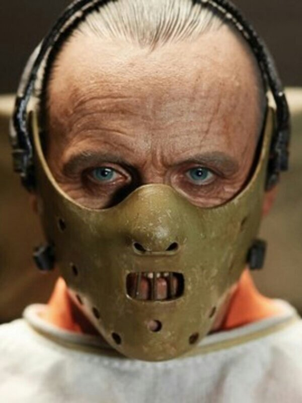
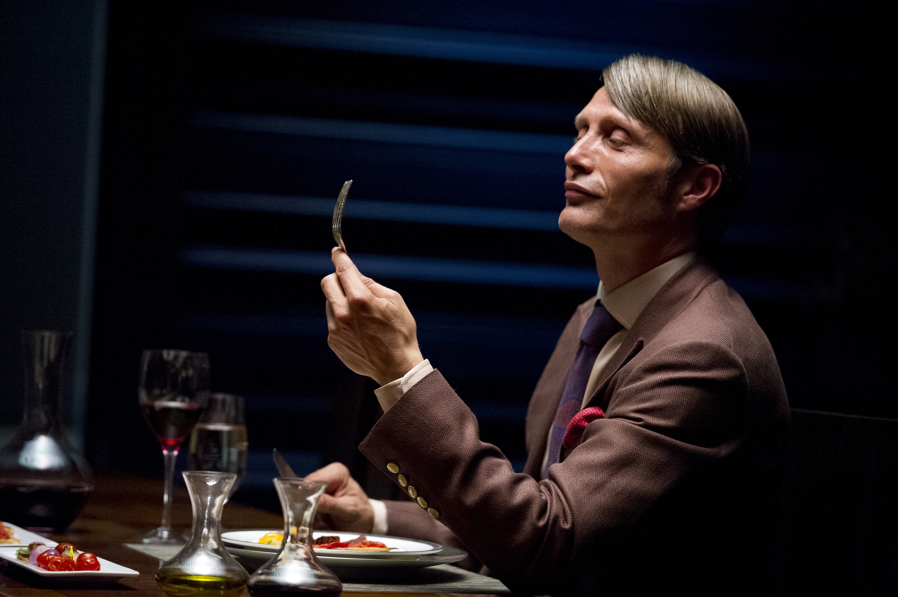

Уилл Грэм — одаренный профайлер, который вместе с ФБР разыскивает серийного убийцу. Уникальный способ мышления Грэма дает ему удивительную способность глубоко проникаться чувствами другого человека, даже психопата. Он может понять, что ими движет. Но когда ум преследуемого убийцы оказывается слишком сложным, он прибегает к помощи доктора Лектера, одного из ведущих психиатрических умов в стране. Вместе они начинают охоту за коварным убийцей, после чего Лектер становится регулярным консультантом Уилла, а также помогает ему справиться с психологической травмой.
Многие сериалы и фильмы о психопатах, маньяках, серийных убийцах и просто ненормальных всегда привлекали внимание зрителя. Этот сериал не исключение, но его огромный плюс. Сюжетная линия, которая крутится вокруг необычных людей, позволяет режиссерам постоянно удивлять зрителей неожиданными поворотами и твистами.
Сериал выходил с 2013 года по 2015 и всего в нем 3 сезона по 13 серий в каждом. Каждая серия длится 45 минут. И каждая потраченная минута на просмотр окупается эмоционально. К тому же вы сможете наблюдать крайне необычные сцены приготовления изысканных блюд самим Ганнибалом Лектором. Его мастерство поражает любого зрителя